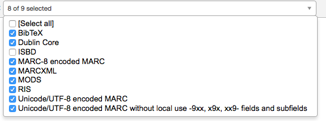
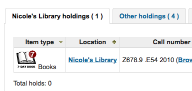
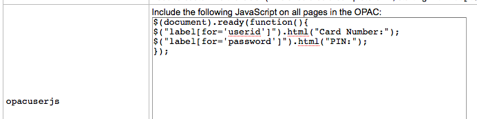

OPAC
進階搜尋選項
OpacAdvancedSearchTypes
詢問：在 OPAC 進階搜尋中顯示欄標，以限制對 ___ 欄位的搜尋。
預設值：itemtype
說明：
在OPAC的進階搜尋頁面上，你可以選擇允許對以下一項或全部進行篩選：館藏類型（itemtypes）、館藏代碼（ccode）和書架位置（loc）。
用豎線 （|） 分隔多個值。例如，輸入 itemtypes|loc 以允許限制對館藏類型和書架位置的搜尋。
在系統偏好中輸入選項的順序就是欄標出現的順序。系統偏好中的第一個選項是選定的欄標。
如果留空，則使用 “itemtypes”。
搜尋類型中的值是被 OR’ 一起運算的，而每個不同的搜尋類型在查詢限制中是被 AND’ 一起的。
參見：
OpacAdvSearchMoreOptions
詢問：顯示搜尋選項供延伸檢視 ___
預設：全選
值：
[全選]
館藏類型
語言
位置與可及性
出版年
排序
次類型
說明：
此設定決定在進階搜尋頁面使用 ‘更多選項’ 時可以顯示的搜尋欄位。
OpacAdvSearchOptions
預設：館藏類型、語系、書架位置與可得性、出版日期、排序
詢問：顯示搜尋選項 ___
值：
[全選]
館藏類型
語言
位置與可及性
出版年
排序
次類型
說明：
這個偏好的設定將決定在進階搜尋頁面使用 ‘較少選項’ 時顯示的搜尋欄位。
外觀
這些偏好控制 OPAC 顯示內容的外觀。
BiblioDefaultView
預設值：簡單格式
Asks: By default, show bibliographic records ___
值：
如 ISBD 模版所示。
See ISBD preference for more information
簡單格式。
MARC 格式。
說明：
This system preference determines the level of bibliographic detail that the patron will see on the OPAC detail page. The simple form displays the graphical interface; MARC format displays the MARC21 cataloging view; ISBD displays the ISBD (International Standard Bibliographic Description, AACR2) view.
COinSinOPACResults
預設值：包括
詢問：OPAC 搜尋結果 ___ COinS / OpenURL / Z39.88。
值：
不包括
若選擇於搜尋結果內不包括 COinS，它仍儲存在個別的書目記錄裡。
包括
啟用此功能將減慢 OPAC 的回應時間。
說明：
COinS 是 ContextObjects in Spans 的縮寫。COinS 是把書目後設資料嵌入網頁 HTML 碼的方法。允許書目軟體出版機讀書目館藏與客戶參照管理軟體 (如 Zotero) 取用書目後設資料。同時可以送給 OpenURL 解析器。允許搜尋自己圖書館裡的複本館藏。
DisplayOPACiconsXSLT
詢問：___ 在OPAC的XSLT MARC21 結果與詳細頁面裡的格式、預期讀者及資料類型圖示。
預設值：不顯示
值：
不顯示
顯示
說明：
這個系統偏好用於顯示或隱藏從MARC 21書目記錄的控制欄段中提取的格式、預期讀者及資料類型圖示。
备注
這些圖示的詳情見 XSLT 資料類型圖示。
警告
This is only used in XSLT displays, so OPACXSLTResultsDisplay and/or OPACXSLTDetailsDisplay must be set to use an XSLT stylesheet for this to show (default or custom)
參見：
hidelostitems
預設值：不顯示
詢問：在搜尋與詳情頁面 ___ 遺失的館藏。
說明：
被標記為遺失的館藏，可以顯示或不顯示於 OPAC。設定為 “不顯示”，則 OPAC 不顯示被標記為遺失的館。設定為 “顯示”，則 OPAC 顯示被標記為 ‘遺失^ 的館藏
值：
不顯示
顯示

HighlightOwnItemsOnOPAC 與 HighlightOwnItemsOnOPACWhich
HighlightOwnItemsOnOPAC 預設值：不強調
HighlightOwnItemsOnOPACWhich 預設值：讀者所屬圖書館
詢問：___ 結果來自移動結果至 ___ 前方，並加大字型或強調結果列。
HighlightOwnItemsOnOPAC 值：
不強調
強調
HighlightOwnItemsOnOPACWhich 值：
OPAC’s library based via the URL
根據 Apache 環境裡的 BRANCHCODE 變數決定分館。如：在 koha-httpd.conf 的 OPAC 區塊裡，加入這列字 SetEnv BRANCHCODE “CPL”
讀者所屬分館
只強調與讀者所屬分館相同的館藏。若沒有登入 OPAC，則不強調任何館藏。
重要
This system preference will only effect sites that are not using an XSLT stylesheet. XSLT stylesheets are defined in the OPACXSLTResultsDisplay and OPACXSLTDetailsDisplay preferences.
LibraryName
詢問： 在 OPAC 顯示 ___ 做為圖書館的名稱。

OpacAdditionalStylesheet
詢問：使用新增的 CSS 樣式表 ___ 取代預設樣式表的設定。
說明：
此偏好從您的 OPAC 語系裡的模版資料夾找尋樣式表，如：/koha-tmpl/opac-tmpl/prog/en/css。若上傳客製化檔案，opac-mystyles.css 至此資料夾，就可在此偏好鍵入該檔名 opac-mystyles.css。與 OPAC 預設的 CSS 樣式檔併存。建議採用此方法畎為被讀者選用的樣式表，將保留在讀者瀏覽器的快取裡，下次再拜訪時，直接從快取內抓出，不需要重複載入。
當然，也可以選用其他伺服器裡的 CSS 並鍵入完整的 URL 址 http://
註記
空白表示不用它
註記
此檔案將新增連結的 CSS，不取代既有的預設 CSS。
OpacAddMastheadLibraryPulldown
詢問：在 OPAC 的刊頭 ___ 下拉式圖書館選單。
預設：不新增
值：
新增
Don’t add
說明：
When set to ‘Add’ this system preference will add a dropdown menu of libraries and library groups in the simple search bar in the OPAC.

This will search for records that have items whose home library is the selected library. It’s the same as the library limit on the advanced search page.
OPACBaseURL
詢問：OPAC 位於 ___
說明：
This system preference is looking for the URL of your public catalog (OPAC) with the http:// in front of it (enter http://www.mycatalog.com instead of www.mycatalog.com). Once it is filled in Koha will use it to generate permanent links in your RSS feeds, for your social network share buttons and in your staff interface when generating links to bibliographic records in the OPAC.
重要
不要加入 URL 最後的斜撇否則會打斷此 URL 的連結。(如：www.google.com 不要用 www.google.com/)
重要
必須鍵入公用目錄的 URL 供 RSS、unAPI、與搜尋外掛使用。
重要
This must be filled in with the URL of your public catalog to show ‘OPAC View’ links from bibliographic records in the staff interface:

OPACDisplay856uAsImage
詢問：將 856u 欄位的 URI 以圖片形式顯示於：___
預設值：既不在詳情頁面也不在結果頁面
值：
同在搜尋結果與書目詳情頁面
备注
Both OPACXSLTDetailsDisplay and OPACXSLTResultsDisplay need to have values in order for this preference to work.
警告
只適用於 MARC21。
詳情頁面
备注
OPACXSLTDetailsDisplay needs to have a value in it for this preference to work.
警告
只適用於 MARC21。
既不在詳情頁面也不在結果頁面
只限結果頁面
备注
OPACXSLTResultsDisplay needs to have a value in it for this preference to work.
警告
只適用於 MARC21。
說明：
除了這個選項被設定外，相應的XSLT選項必須被打開。
此外，相應的856q欄段必須有一個有效的MIME圖像擴展名（例如，”jpg”）或MIME圖像類型（即以 “image/”開頭），或在該欄段中輸入通用指標 “img”。
备注
常見圖片 MIME 類型
檔案類型
圖片 MIME 類型
檔案延伸
點陣圖
影像/bmp
bmp
圖像互換格式 (gif)
圖片/gif
gif
JPEG 圖片
圖片/jpeg
jpg
JPEG 圖片
圖片/jpeg
jpeg
可縮放向量圖形
圖片/svg+xml
svg
TIF 圖片
圖片/tiff
tiff
TIF 圖片
圖片/tiff
tif
When all of the requirements are met, an image file will be displayed instead of the standard link text. Clicking on the image will open it in the same way as clicking on the link text. When you click on the image it should open to full size, in the current window or in a new window depending on the value in the system pref OPACURLOpenInNewWindow.
參見：
OpacExportOptions
預設值：

詢問：選定出現在 OPAC 詳情頁面的選項：___
說明：
In the OPAC on the right of each bibliographic record there is a menu that allows for saving the record in various formats. This patch will allow you to define which options are in the pull down menu. Available options are: BIBTEX (bibtex), Dublin Core (dc), MARCXML (marcxml), MARC-8 encoded MARC (marc8), Unicode/UTF-8 encoded MARC (utf8), Unicode/UTF-8 encoded MARC without local use -9xx, x9x, xx9- fields and subfields (marcstd), MODS (mods), and RIS (ris).
OPACFallback
預設：bootstrap
問：使用 ___ 主題做為 OPAC 的預備主題。
說明：
此偏好的目的是讓圖書館選擇自己的喜好主題。
OpacFavicon
詢問： 選用 ___ 做為 OPAC 的網頁圖示。
說明：
圖標是大多數瀏覽器中出現在標籤頁標題旁邊的小圖標。這個欄位的預設值（如果留空）是白色背景上的Koha標誌的小 ‘K’。

輸入一個完整的URL（以http:// 或https:// 開始），以顯示你的影像
备注
以網頁圖示產生器 :ref:`Favicon Generator <http://antifavicon.com/>`__ 將標識轉換為網頁圖示。
OpacHighlightedWords 與 NotHighlightedWords
OpacHighlightedWords 預設：不突顯
NotHighlightedWords 預設：與|或|否
詢問：___ 顧客在搜尋結果和詳細資訊頁面中搜尋的單詞;為了防止某些單詞被突出顯示，請在這裡輸入非索引字清單 ___（用 | 分隔）
OpacHighlightedWords 值：
不強調
重點
OPACHoldingsDefaultSortField
預設值：表單的第一欄
詢問：在館藏分頁 ___ 館藏條碼
值：
表單的第一欄
預約圖書館
所屬圖書館
OpacKohaUrl
預設值：不顯示
值：
不顯示
顯示
說明：
當此偏好設置為 ‘顯示’ 時，OPAC頁腳的右下方將出現文字，說明 ‘由Koha提供’ 並連結到Koha官方網站。

OpacLangSelectorMode
預設值：只有頁腳
詢問： 在 ___ 顯示語文選擇器。
值：
頁首與頁尾
只限頁尾
頂端
說明：
If you have the opaclanguagesdisplay preference set to display language options in the public catalog, then this preference will allow you to control where the language selector shows. You can choose to show it only on the top or bottom or in both places.
opaclayoutstylesheet
預設值：opac.css
詢問：在 OPAC 裡不用預設值，改用 /css/ ___ 做為 CSS 樣式表
說明：
此設定的功能是把 OPAC 預設的佈局指向 *.css。*.css 檔案是層疊樣式表，與 HTML 一起使用，做為設定 HTML 頁面的格式與顯示在 OPAC 的樣子。Koha 有兩個樣式表：opac.css 與 opac2.css。也可以使用客製化的樣式表。樣式表清單在 opaclayoutstylesheet 偏好儲存在 Koha 伺服器裡。
註記
空白則停用它改為使用 Koha 內建的檔案
重要
在此偏好使用客製化的值造成 Koha 完全忽視預設的樣式表佈局。
OpacLocationBranchToDisplay
預設值：典藏圖書館
詢問：在詳情頁面顯示 ___ 筆 OPAC 館藏記錄。
值：
典藏圖書館
所屬圖書館與所在圖書館
所屬圖書館
說明：
設定是否在 OPAC 詳情頁面顯示所在圖書館、所屬圖書館、或兩者同時顯示。
OpacLocationOnDetail
預設值：位於典藏圖書館之下
詢問：在 OPAC 詳情頁面顯示 ___ 筆館藏的書架位置。
值：
位於所屬圖書館與典藏圖書館之下
位於獨立於欄位
館藏圖書館之下
所屬圖書館之下
說明：
設定顯示所屬圖書館、所在圖書館、或兩者的書架位置。
OpacMaintenance
預設值：不顯示
詢問：Koha維修時 ___ 警示訊息，不使用 OPAC 本身。
註記
資料庫需要無條件更新時，顯示相同的警示訊息。
說明：
This system preference allows the system administrator to turn off the OPAC during maintenance and display a message to users. When this preference is switched to “Show” the OPAC is not usable. The text of this message is not editable at this time.
值：
不顯示
顯示
When this preference is set to show the maintenance message the ability to search the OPAC is disabled and a message appears. The default message can be altered by using the OpacMaintenanceNotice preference.

OpacMaintenanceNotice
詢問：啟用 OpacMaintenance 時顯示以下的 HTML
說明：
This system preference will allow you to set the text the OPAC displays when the OpacMaintenance preference is set to ‘Show.^
OpacMaxItemsToDisplay
預設值：50
Asks: Display up to ___ items on the bibliographic record detail page
說明：
This system preference will help with slow load times on the bibliographic detail pages by limiting the number of items to display by default. If the bibliographic record has more items than this, a link is displayed instead that allows the user to choose to display all items.
OpacMetaDescription
詢問：此說明將顯示在搜尋引擎結果中（160個字元）。
說明：
This system preference adds functionality to add a meta description tag with content (up to 160 characters). This is used by search engines to add a description to the library in search results.
OPACMySummaryHTML
詢問：讀者登入 OPAC 使用以下的 HTML 時 (空白則停用)，在 “我的摘要” 分頁裡包括 “連結” 欄位。
說明：
從此偏好鍵入的 HTML 將顯示在 OPAC ‘我的摘要’ 區塊內的 ‘借出’ 分頁。原來的 {BIBLIONUMBER}、{TITLE}、{ISBN} 與 {AUTHOR} 都以顯示的記錄取代之。可以放在社交網站或搜尋裡當成 ‘共享’ 連結。

範例資料：
<p><a href="http://www.facebook.com/sharer.php?u=http://YOUROPAC.ORG/cgi-bin/koha/opac-detail.pl?biblionumber={BIBLIONUMBER}">Share on Facebook</a>
<br />TITLE: {TITLE}
<br />AUTHOR: {AUTHOR}
<br />ISBN: {ISBN}
<br />BIBLIONUMBER: {BIBLIONUMBER}</p>
OpacNoItemTypeImages
Asks: ___ itemtype icons in the OPAC.
預設值：顯示
值：
不顯示
顯示
說明：
This system preference allows the system administrator to determine if users will be able to set and see an item type icon in the catalog in the OPAC.
If images of item types are disabled, text labels for item types will still appear in the OPAC.
The noItemTypeImages system preference is used to show or hide the itemtype images in the staff interface.
OPACNoResultsFound
無預設值
詢問：在 OPAC 未找到結果時顯示此 HTML
搜尋無結果時在現有說明之下顯示此 HTML。

註記
可插入 {QUERY_KW} 取代詢問的關鍵詞。
OPACPlayMusicalInscripts
預設值：不播放
詢問：在詳情頁面顯示 ___ MIDI音樂詞譜。
值：
不播放
播放
說明：
This system preference controls whether a short audio clip is available to play when musical inscripts are added to the detailed view of a bibliographic record.
註記
The OPACShowMusicalInscripts preference must be set to ‘Show’ for these clips to display.
OpacPublic
預設值：啟用
詢問：___ Koha OPAC 為公開的。若為私用 OPAC 則需帳號密碼才能使用 OPAC。
值：
停用
啟用
說明：
This system preference determines if your OPAC is accessible and searchable by anyone or only by members of the library. If set to ‘Don’t enable’ only members who are logged into the OPAC can search. Most libraries will leave this setting at its default of ‘Enable’ to allow their OPAC to be searched by anyone and only require login for access to personalized content.
OPACResultsLibrary
預設值：所屬圖書館
詢問：OPAC 的搜尋結果，顯示在館藏的 ___。此功能只限 MARC21 與 UNIMARC。
值：
現在位置
所屬圖書館
OPACResultsMaxItems
Asks: Show no more than ___ individual (available) items on the OPAC XSLT search results
Default: 1
說明：
This system preference is used to limit the number of available items shown in the search results in the OPAC.
If you show a lot of information in OpacItemLocation and have a lot of items, the view can get cluttered or overwhelming for patrons. Use this system preference to show only the information for a limited number of individual items. By default, the details (such as location, call number, etc.) of only one item are displayed in the search results.
Patrons can still click through to the detailed record to see the details of each individual item.
This system preference affects the display for ‘available’ and ‘available for reference’ items
备注
Statuses that are ‘available for reference’ are managed in the Reference_NFL_Statuses.
备注
OPACResultsMaxItemsUnavailable does the same as this preference for unavailable items.
OPACSearchForTitleIn
詢問：在 OPAC 詳情頁面的 “更多搜尋” 盒裡，加入以下的 HTML (空白則停用)
Default:
<a href="https://worldcat.org/search?q={TITLE}" target="_blank">Other Libraries (WorldCat)</a>
<a href="https://scholar.google.com/scholar?q={TITLE}" target="_blank">Other Databases (Google Scholar)</a>
<a href="https://www.bookfinder.com/search/?author={AUTHOR}&title={TITLE}&st=xl&ac=qr" target="_blank">Online Stores (Bookfinder.com)</a>
<a href="https://openlibrary.org/search?author=({AUTHOR})&title=({TITLE})" target="_blank">Open Library (openlibrary.org)</a>
說明：
Enter search links to other catalogs, these will appear in the ‘More searches’ option in the detailed record in the OPAC.
The placeholders
{BIBLIONUMBER},{CONTROLNUMBER},{OCLC_NO},{TITLE},{ISBN},{ISSN}and{AUTHOR}will be replaced with information from the displayed record.To search by OCLC number in Worldcat,
the record must have the OCLC number in 035$a, with the (OCoLC) prefix, for example:
035 _a(OCoLC)62385712
the link to add in the preference is:
<a href="https://worldcat.org/search?q={OCLC_NO}" target="_blank">WorldCat (via OCLC number)</a>
OpacSeparateHoldings 與 OpacSeparateHoldingsBranch
OpacSeparateHoldings 預設值：不區隔
OpacSeparateHoldingsBranch 預設值：所屬圖書館
詢問：___ 館藏顯示為兩個分頁，第一分頁包括館藏是 ___ 登入讀者的圖書館。第二分頁將包括所有的其他館藏。
OpacSeparateHoldings 值：
不區隔
區隔
OpacSeparateHoldingsBranch 值：
典藏圖書館
所屬圖書館
說明：
This system preference lets you decide if you would like to have the holding information on the bibliographic detail page in the OPAC split in to multiple tabs. The default is to show all holdings on one tab.

OPACShowCheckoutName
預設值：不顯示
詢問：在 OPAC 的詳情頁面 ___ 借出館藏讀者的姓名。
值：
不顯示
顯示
說明：
This system preference allows all patrons to see who has the item checked out if it is checked out. In small corporate libraries (where the OPAC is behind a firewall and not publicly available) this can be helpful so coworkers can just contact the patron with the book themselves. In larger public and academic libraries setting this to ‘Show’ would pose serious privacy issues.
OPACShowHoldQueueDetails
預設值：不顯示任何預約細節
詢問：在 OPAC ___ 給讀者看。
值：
不顯示任何預約細節
顯示預約
顯示預約與優先順位
顯示優先順位
說明：
This system preference allows you to choose the type of hold information to make available to patrons when logged in to their account on the OPAC. If you select to include hold priority information the list of holds will initially be sorted by priority.
OPACShowMusicalInscripts
預設值：不顯示
詢問：在詳情頁面顯示 ___ 音樂詞譜。
值：
不顯示
顯示
說明：
This system preference allows musical inscripts to be displayed in the detailed view of a bibliographic record on the OPAC. MARC data for the inscripts is added to the 031 MARC21 tag of the record. Audio clips can also be displayed if the OPACPlayMusicalInscripts preference set to ‘Play’.
OpacShowRecentComments
預設值：不顯示
詢問：在 OPAC 的標頭 ___ 最新的評論。
值：
不顯示
顯示
說明：
If you have chosen to allow comments in your OPAC by setting OPACComments to ‘Allow’ you can include a link to the recent comments under the search box at the top of your OPAC with this preference.

OpacStarRatings
詢問：在 ___ 頁面顯示星級評鑑。
預設值：否
值：
結果、細節和讀者
星級評分出現在
結果清單

書目記錄詳情頁
讀者的借出清單

讀者的借出的歷史清單

只有詳情
星級評分出現在書目記錄詳情頁中
無
星級評分被停用
說明：
星級評價是一種讓你的讀者留下評價的方式，而不需要留下完整的評論。
沒有登錄的讀者只能看到星評和平均評分。
已登錄的讀者可以點擊書目記錄詳情頁上的星星，在他們目前的借出清單或借出歷史清單中，留下自己的評價。
點擊搜尋結果中的星星不會提交評級。
opacthemes
預設：bootstrap
詢問： 在 OPAC 裡，使用 ___ 主題。
值：
bootstrap
Bootstrap Theme
此主題已完成
OPACURLOpenInNewWindow
預設值：不使用
詢問：從 OPAC 點選連結至其他網站(如：博客來或 OCLC)時，___ 在新視窗打開它。
值：
要
不要
說明：
This system preference determines if URLs in the OPAC will open in a new window or not. When clicking on a link in the OPAC, a patron does not need to worry about navigating away from their search results.
OPACUserCSS
詢問： 在 OPAC 各頁面使用以下的 CSS
說明：
OPACUserCSS allows the administrator to enter styles that will overwrite the OPAC’s default CSS as defined in ‘opaclayoutstylesheet’ or ‘opacstylesheet’. Styles may be entered for any of the selectors found in the default style sheet. The default stylesheet will likely be found at http://your_koha_address/opac-tmpl/bootstrap/css/opac.css. Unlike OpacAdditionalStylesheet and opaclayoutstylesheet this preference will embed the CSS directly on your OPAC pages.
OPACUserJS
詢問：在 OPAC 各頁面使用以下的 JavaScript



說明：
This system preference allows the administrator to enter JavaScript or JQuery that will be embedded across all pages of the OPAC. Administrators may use this preference to customize some of the interactive sections of Koha, customizing the text for the login prompts, for example. Sample JQuery scripts used by Koha libraries can be found on the wiki: http://wiki.koha-community.org/wiki/JQuery_Library.
OPACUserSummary
預設值：顯示
詢問：___ 在首頁顯示使用者的借出、逾期、預約與罰款
說明：
啟用後，讀者登入時，本系統偏好取代 OPAC 主頁的登入表單。
OPACXSLTDetailsDisplay
詢問：以 ___ 的 XSLT 樣式表顯示 OPAC 詳情
預設：預設值
值：
輸入 “預設” 來使用預設的樣式表
輸入一個XSLT文件的路徑
例如，/path/to/koha/and/your/stylesheet.xsl
在多語系環境下可在路徑裡輸入 {langcode} 告知 Koha 取用正確的資料夾
例如，/home/koha/src/koha-tmpl/opac-tmpl/bootstrap/{langcode}/xslt/MARC21slim2OPACDetail.xsl
例如，http://mykohaopac.org/{langcode}/stylesheet.xsl
輸入一個外部樣式表的URL
說明：
XSLT stylesheets allow for the customization of the details shows on the screen when viewing a bibliographic record. This system preference will allow you either use the default look that comes with Koha or design your own stylesheet.
該系統偏好控制OPAC中詳細書目記錄的顯示。
If using a custom stylesheet that uses item MARC fields, enable the PassItemMarcToXSLT system preference. Otherwise, item fields are not available for use in XSLT stylesheets.
參見：
OPACXSLTListsDisplay
詢問：在 OPAC 的結果頁面使用 ___ 做為 XSLT 樣式表
預設：預設值
值：
輸入 “預設” 來使用預設的樣式表
輸入一個XSLT文件的路徑
例如，/path/to/koha/and/your/stylesheet.xsl
在多語系環境下可在路徑裡輸入 {langcode} 告知 Koha 取用正確的資料夾
例如，/home/koha/src/koha-tmpl/opac-tmpl/bootstrap/{langcode}/xslt/MARC21slim2OPACResults.xsl
例如，http://mykohaopac.org/{langcode}/stylesheet.xsl
輸入一個外部樣式表的URL
說明：
XSLT stylesheets allow for the customization of the details shows on the screen when viewing lists. This system preference will allow you either use the default look that comes with Koha or design your own stylesheet.
這個系統偏好控制OPAC中a :ref:`清單 <lists-label>`的記錄顯示。
If using a custom stylesheet that uses item MARC fields, enable the PassItemMarcToXSLT system preference. Otherwise, item fields are not available for use in XSLT stylesheets.
參見：
OPACXSLTResultsDisplay
詢問：顯示 OPAC 結果時使用 ___ 的 XSLT 樣式表
預設：預設值
值：
輸入 “預設” 來使用預設的樣式表
輸入一個XSLT文件的路徑
例如，/path/to/koha/and/your/stylesheet.xsl
在多語系環境下可在路徑裡輸入 {langcode} 告知 Koha 取用正確的資料夾
例如，/home/koha/src/koha-tmpl/opac-tmpl/bootstrap/{langcode}/xslt/MARC21slim2OPACResults.xsl
例如，http://mykohaopac.org/{langcode}/stylesheet.xsl
輸入一個外部樣式表的URL
說明：
XSLT stylesheets allow for the customization of the details shows on the screen when viewing the search results. This system preference will allow you either use the default look that comes with Koha or design your own stylesheet.
這個系統偏好控制著OPAC中 :ref:`搜尋結果<search-results-label>`中的記錄顯示。
If using a custom stylesheet that uses item MARC fields, enable the PassItemMarcToXSLT system preference. Otherwise, item fields are not available for use in XSLT stylesheets.
參見：
參考資源_NFL_狀態
要求：在OPAC搜尋結果中列出以下可供參考的非借出狀態。 ___
預設值：1|2
說明：
該系統偏好用於指定哪些不外借狀態應顯示為 ‘可供參考’

當非借出狀態出現在 Reference_NFL_Statuses 清單中時，它將在OPAC中以綠色文字顯示 ‘可供參考’。
其不外借狀態將顯示為 ‘不可用’

當不外借狀態不在Reference_NFL_Statuses 清單中時，它將在OPAC中以紅色文字顯示為 ‘不可用’。
不外借的值在NOT_LOAN :ref:`容許值類別<existing-values-label>`中找到。
值必須用豎線 （|） 分隔。
特色
numSearchRSSResults
預設值：50
詢問： 在 RSS 裡，顯示 ___ 筆搜尋結果。
說明：
By default the RSS feed that is automatically generated for every search results page will list 50 items. This can sometimes be too much for some RSS feed readers and for some people this isn’t enough. This system preference allows you to adjust this number to show the best number of results for your patrons.
OPACAcquisitionDetails
詢問：___ OPAC 詳情頁面的採訪詳情。
預設值：不顯示
值：
不顯示
顯示
說明：
If set to ‘Show’ this preference shows patrons how many items are on order in the Holdings tab of the detailed record in the OPAC.
If the items are created when placing the order, it will show how many items are on order and the individual items will have an ‘On order’ note under the status.
If the item is created when receiving the order, or when cataloging the record, it will only show how many items are on order.
If set to “Don’t show”, the holdings tab will say “No physical items for this record” if the items are created on receiving or when cataloging the record. Items will be displayed without any special note if they are created when placing the order.
备注
Note that items are considered ordered when the basket is closed. This preference has no effect while the basket is still open.
opacbookbag
預設值：允許
詢問：___ 讀者將找到的館藏暫存於 OPAC 的 “書目清單”。
值：
允許
不允許
說明：
This system preference allows the user to temporarily save a list of items found on the catalog. By using the book bag, or cart, the user can print out or email a list of items found. The user does not need to be logged in. This list is temporary and will be emptied, or cleared, at the end of the session.
OpacBrowser
重要
This system preference only applies to installations using UNIMARC at this time.
預設：不允許
詢問：___ 讀者在 OPAC 瀏覽主題權威
值：
允許
不允許
重要
必須執行 權威瀏覽工作排程 才能新增瀏覽清單
OpacBrowseResults
預設值：啟用
詢問：___ OPAC 詳情頁面的瀏覽與搜尋結果。
值：
停用
啟用

說明：
This system preference will control the option to return to your results and/or browse them from the detail page in the OPAC.
OpacBrowseSearch
Asks: ___ interface for browsing all holdings (Elasticsearch only).
值：
Disable
啟用
預設值：停用
說明：
This system preference allows Opac users to browse records by Author, Title or Subject.
When set to “Enable”, the “Browse search” option appears in the Opac “More searches” area.
警告
This system preference only has an effect when Elasticsearch is set up as the search engine.
If you are not sure which search engine your Koha system is using, start by checking the SearchEngine system preference.
OpacCatalogConcerns
Asks: ___ OPAC users to report concerns about catalog records.
值：
允許
不允許
預設：不允許
說明：
This system preference is used to turn on the concern reporting feature in the OPAC.
OpacCloud
重要
This system preference only applies to French systems at this time.
預設值：不顯示
詢問：___ OPAC 的主題雲
值：
不顯示
顯示
重要
必須執行 權威瀏覽工作排程 才能新增瀏覽清單
OPACPatronDetails
預設值: 不啟用
詢問：___ 選項展示QR Code在OPAC的書目詳頁。
值：
停用
啟用
說明：
With this preference enabled a new option ‘Send to device’ displays in the list of options on the OPAC details page. When this link is clicked a QR code will be displayed which can be scanned using a compatible device in order to save the bibliographic details to that device.
OPACFinesTab
預設值：允許
詢問：___ 讀者從 OPAC 的 ‘摘要’ 頁面近用至罰款分頁。
值：
允許
opacuserlogin needs to be set to ‘allow’
不允許
OpacHoldNotes
預設值：不允許
詢問：___ 讀者預約時新增說明。
值：
允許

不允許
OPACISBD
預設：見共筆的`ISBD 檢視組態 <https://wiki.koha-community.org/wiki/ISBD_view_configuration>`。
詢問：使用以下的 OPAC ISBD 模版：
說明：
此設定決定在 OPAC 顯示 ISBD 資訊的方式。在此清單內的細目可以用不同的 ISBD 方式呈現。ISBD 全稱是 International Standard Bibliographic Description 譯名是國際書目著錄標準，1969年由國際圖書館協會聯合會 (International Federation of Library Associations, IFLA) 首次發佈做為敘述編目的指南。ISBD 的目的是協助不同類型的書目資料在國際間交換。
OpacItemLocation
詢問：顯示 ___ 供 OPAC 搜尋館藏之用。
預設值: 圖書館及索書號
值：
圖書館及索書號
圖書館, 收藏代碼以及索書號
僅限圖書館
圖書館, 位置以及索書號
說明：
此設定允許OPAC results XSLT樣式表的讀者可以選擇展示收藏代碼或圖書館的位置及索書號.
OpacNewsLibrarySelect
Asks: ___ a library selection list for news items in the OPAC.
預設值：不顯示
值：
不顯示
顯示
說明：
If set to ‘Show’ a dropdown menu will be displayed above the news in the OPAC so that patrons can choose which library they want to see the news from.
If set to “Don’t show”, unlogged OPAC users will only see system-wide news (news set to ‘All libraries’) and logged in users will see news for their home library and system-wide news.
OpacPasswordChange
預設值：允許
詢問：___ 讀者由 OPAC 更改其密碼。
值：
允許
opacuserlogin needs to be set to ‘allow’
不允許
重要
啟用此功能將打破 LDAP 認證。
OPACpatronimages
預設值：不顯示
詢問：___ 讀者照片於 OPAC 的讀者資訊頁面。
值：
不顯示
顯示
說明：
If patronimages is set to allow the upload of patron images via the staff interface, then setting this preference to ‘show’ will show the patron what image you have on file for them when they view their personal information on their account in the OPAC.
OPACReportProblem
要求: ___讀者將OPAC頁面的問題報表提交給圖書館或Koha管理員。
預設值：允許
值：
不允許
允許
說明：
This system preference controls the ‘Report a problem’ feature on the OPAC, which enables patrons to send problem reports from the OPAC.
Problem reports are sent by email to the address in KohaAdminEmailAddress or to the library’s email address.
备注
The notice sent by email is customizable in the Notices and slips tool. The letter code is PROBLEM_REPORT.
Problem reports are managed in the OPAC problem reports tool.
OpacResetPassword
預設值：不允許
詢問：圖書館讀者 ___ 從 OPAC 以電子郵件恢復他們的密碼。
值：
允許的

不允許
說明：
This system preference controls whether you present users of the public catalog with a ‘Forgot your password’ link or not. Learn more in the OPAC section of this manual.
OPACShowSavings
Asks: Calculate the amount a patron has ‘saved’ by using the library based on replacement prices, and display: ___
Default: none
Values (multi-select):
[全選]
in user summary box on OPAC homepage (the system preference OPACUserSummary must be enabled)
on patron’s ‘your summary’ page
on patron’s checkout history page (the system preference opacreadinghistory must be enabled)

說明：
This system preference will check the patron’s checkout history, add the replacement prices of all previously and currently checked out items, and display the sum in the selected pages.
重要
The items’ replacement prices are used to add up the savings. Make sure your items have replacement prices before displaying this information.
警告
If checkout histories are anonymized or if old checkouts are deleted through the cleanup_database script, the savings information will be inaccurate.
备注
If a patron checks out an item more than once, it will only be counted once in the savings.
OpacTopissue
預設：不允許
詢問：___ 讀者從 OPAC 近用最熱門的館藏。
值：
允許
在 OPAC 出現 ‘最熱門館藏’ 連結

不允許
說明：
This system preference allows the administrator to choose to show the “Most Popular” link at the top of the OPAC under the search box. The “Most Popular” page shows the top circulated items in the library, as determined by the number of times a title has been circulated. This allows users to see what titles are popular in their community. It is recommended that you leave this preference set to ‘Don’t allow’ until you have been live on Koha for a couple of months, otherwise the data that it shows will not be an accurate portrayal of what’s popular in your library.

opacuserlogin
預設值：允許
詢問：___ 讀者從 OPAC 登入自己的帳號。
值：
允許
不允許
即使未登入讀者仍可搜尋 OPAC，此偏好僅停用讀者以自己帳號登入 OPAC
QuoteOfTheDay
要求：在 ___主頁面中顯示當天的報價
預設值：(無)
值：
[全選]
OPAC
館員介面
說明：
這個系統偏好允許你選擇來自於 :ref:`每日引句編輯<quote-of-day-(qotd)-editor-label>`工具中的引句。
OPACHoldRequests
預設值：允許
詢問：___ 讀者經由 OPAC 預約館藏。
值：
允許
opacuserlogin needs to be set to ‘allow’
不允許
OPACComments
詢問：___ 讀者從 OPAC 撰寫書評。
預設值：允許
值：
允許
讀者的評論都先經過館員的審核才能出現在 OPAC
opacuserlogin needs to be set to ‘Allow’
不允許
說明：
這個系統偏好決定了是否允許讀者對他們在OPAC上閱讀過的書目提交評論。如果這個偏好被設置為 “允許”，評論首先被發送到館員介面，供館員批准，然後才在OPAC中顯示。審查和批准評論的館員可以在 :ref:`評論工具 <comments-label>`上找到待定評論。然後，該館員可以選擇批准或刪除這些評論。
參見 :
ShowReviewer
預設值：全名
詢問：在 OPAC 顯示評論者的 ___。
值：
名字
名與第一個縮寫
全名
姓
無名
使用者名稱
說明：
If you would like to protect your patron’s privacy in the OPAC you can choose to hide their names or parts of their names from any of the comments they leave on bibliographic records in your system. OPACComments needs to be set to ‘Allow’ for this system preference to come in to play
ShowReviewerPhoto
Asks: ___ reviewer’s avatar beside comments in OPAC.
預設值：顯示
值：
不顯示
顯示
說明：
This system preference allows libraries to show avatars next to patron’s comments in the OPAC.
These avatars are pulled from the Libravatar library, an open source powered product that allows Internet users to choose a small icon to display next to their name on various different websites.
The library itself has no control over the images the patron chooses to display.
备注
This system preference requires that OPACComments be set to ‘Allow’ and ShowReviewer be set to ‘Show’ to have any effect.
支付
此偏好控制讀者是否可從 OPAC 支付費用。
EnablePayPalOpacPayments 與 PayPalSandboxMode
EnablePayPalOpacPayments 預設值：不是全部
PayPalSandboxMode 預設值：沙盒
詢問：___ 讀者經由 PayPal 的 ___ 模式從 OPAC 支付費用。
EnablePayPalOpacPayments 值：
允許
不允許
PayPalSandboxMode 值：
生產
進入 https://developer.paypal.com/ 網站取得支付的資訊
沙盒
說明：
This system preference will allow you to accept credit card payments via the OPAC for fines via PayPal. You will need to set up your PayPal account and it is recommended that you run tests before using this in production.
重要
PayPayl 的服務條款說，不能向客戶收取處理費用，所以此外掛不會加入處理費。
PayPalChargeDescription
預設值：Koha 付費
詢問：讀者應看到其收費說明 ___
說明
This system preference controls what the patron will see on their PayPal account/bank account for this charge.
PayPalPwd
詢問：收取費用的 PayPal 帳號密碼是 ___
PayPalReturnURL
詢問: 在支付或取消之後，PayPal應回到 ___
Default: OPACBaseURL
值：
配置的返回網址
說明：
This system preference lets you decide where a patron is redirected after they are done with their transaction, either the OPACBaseURL or the URL specified in the PayPal configuration
PayPalSignature
詢問：收取費用的 PayPal 帳號簽名是 ___
PayPalUser
詢問：收取 PayPal 款項的電子郵件帳號是 ___
政策
BlockExpiredPatronOpacActions
預設：不阻止
詢問：___ 到期的讀者使用 OPAC 的預約或續借等功能。
值：
封鎖
不允許
說明：
This system preference lets you set a default value for how Koha handles permissions for patrons who are expired. This system preference can be overwritten by the setting on individual patron categories.
OpacAllowPublicListCreation
預設值：允許
詢問：___ 讀者從 OPAC 新增公共虛擬書架。
值：
允許
不允許
說明：
公共虛擬書架可以被任何人從 OPAC 看到。此偏好控制讀者新增公共虛擬書架的權限。若設為 “不允許” 則祗有館員才可以新增公共虛擬書架。
重要
This system preference will only be taken in to account if you have virtualshelves set to ‘Allow’
OpacAllowSharingPrivateLists
Asks: ___ OPAC users to share private lists with other patrons.
預設：不允許
值：
允許
不允許
說明：
This feature will add the option for patrons to share their lists with other patrons.
When this is set to ‘Allow’ patrons will see a ‘Share list’ link at the top of their list. When they click that link it will ask for the email of the patron they would like to share with.
Koha will then email the patron an invitation to see the list, and, once the other patron accepts the shared list, email the sharing patron to notify them that the share has been accepted.
See Managing lists for more information.
OPACFineNoRenewals
預設值：99999
詢問： 讀者欠款在 ___ 元以下，才能從其 OPAC 續借
OPACFineNoRenewalsIncludeCredits
預設值：包括
詢問: ___ 未結的/未應用的信用, 當申請OPACFineNoRenewals規則
值：
包括
不包括
說明：
This system preference controls whether the OPACFineNoRenewals function uses the account balance (which combines outstanding credits and debits) or account amount outstanding (which excludes any credits) to make the calculation.
註記
Generally you would set this system preference to align with the AccountAutoReconcile system preference. If you have AccountAutoReconcile set to ‘Do’ you should leave this system preference as ‘Include’. If you have AccountAutoReconcile set to ‘Do not’ it would make sense to have this set as ‘Don’t include’.
OpacRenewalAllowed
預設值：允許
詢問：___ 讀者從 OPAC 續借。
值：
允許
opacuserlogin needs to be set to ‘allow’
不允許
Staff will still be able to renew items for patrons via the staff interface
說明：
This system preference allows the administration to choose if patrons can renew their checked out materials via their checked out history in the OPAC. It allows patrons to renew their materials without having to contact the library or having to return to the library.
OpacRenewalBranch
Default: the library the item was checked out from
詢問：使用 ___ 做為分館代碼供統計之用
值：
NULL
‘OPACRenew’
the item’s home library
the patron’s home library
the library the item was checked out from
說明：
This value is used in the statistics table to help with reporting. The statistics table in Koha keeps track of all checkouts and renewals, this preference defines which library is entered in to the table when a patron renews an item for themselves via the OPAC.
SearchMyLibraryFirst
預設值：不限制
詢問：___ 讀者僅能搜尋所屬圖書館。
值：
不限制
搜尋 OPAC 時顯示所有圖書館的搜尋結果
If you’re a one library system, choose ‘Don’t limit’
限制
讀者仍然可以通過進階搜尋頁面搜尋其他圖書館 - 但將僅限於從基本搜尋框中搜尋自己的圖書館
opacuserlogin needs to be set to ‘allow’
私人
AllowPatronToSetCheckoutsVisibilityForGuarantor
預設：不允許
詢問：___ 讀者設隱私，對保證人顯示其借出”。
值：
允許
不允許
說明：
By default staff can see checkouts to family members via the staff interface. This system preference will allow guarantees (children) to grant permission to guarantors (guardians) to view their current checkouts via the public catalog. This system preference requires that you allow patrons to choose their own privacy with the OPACPrivacy preference.
AnonymousPatron
預設值：0
詢問：以讀者證號碼 ___ 做為匿名讀者 (供匿名推薦採訪與借閱記錄之用)
註記
設定此偏好前 新增讀者 供所有的匿名建議與館藏閱讀紀錄使用。此讀者可以是任何類型但應明確地命名確定其為匿名讀者 (如：無名氏)。
重要
記得使用 borrowernumber 說明讀者的號碼。從右方的 ‘圖書館使用’ 找到 borrowernumber。

EnableOpacSearchHistory
預設值：保留
詢問：___ 讀者在 OPAC 的搜尋記錄。
值：
不保留
保留
OPACHoldsHistory
詢問：___ 讀者查看他們過去的持有清單。
預設：不允許
值：
允許
不允許
說明：
此系統偏好確定是否允許顧客查看他們 在 OPAC 上保存的歷史記錄。
OPACPrivacy
預設：不允許
詢問：___ 選擇其借閱記錄的隱私權設定。
重要
This requires opacreadinghistory set to ‘Allow’ and AnonymousPatron to be set to your anonymous patron’s borrowernumber.
值：
允許
不允許
說明：
預設的讀者隱私設定值在 讀者類型 區塊。若設為 ‘允許’ 讀者就可以經由 OPAC 更改其隱私設定。
重要
If patron has chosen to have their reading history anonymized and you have StoreLastBorrower set to “Don’t store” then as soon as the item is checked in the last borrower will be anonymized.
opacreadinghistory
預設值：允許
詢問：___ 讀者查看其借閱記錄。
重要
Enabling this will make it so that patrons can view their circulation history in the OPAC unless you have OPACPrivacy set to ‘Allow’.
重要
除非讀者選擇其設定為不儲存借出記錄，否則該資料將儲在系統內，不論館員如何設定。
TrackClicks
預設值：不追蹤
詢問：___ 讀者點選的連結。
值：
不追蹤
追蹤
匿名追蹤
說明：
經由此偏好可以追蹤 Koha 內的每個點選。這些資料儲存在資料庫裡，可以抓出來編製成報表。若選擇 ‘追蹤’ Koha 記錄點選的連結與登入者。若選擇 ‘匿名追蹤’，則不記錄登入者的讀者證號碼只記錄其他的資料。
註記
記得更新圖書館隱私政策並從 OPAC 連結過來，告知讀者圖書館正追蹤其資訊。
Restricted page
經由偏好設定指定的 IP 才能近用 Koha。用於指定圖書館或其他授權的單位才能近用其資料庫。
RestrictedPageContent
詢問：限制頁面內的 HTML 內容。
RestrictedPageLocalIPs
詢問：近用的 IP 位址開始為 ___ 不需要認證
說明：
可以用逗點區隔 IP (如：’127.0.0,127.0.1’) 或祗列出 IP 的開始範圍 (如：’127.0.^)
RestrictedPageTitle
詢問：以 ___ 為限制頁面的題名
說明：
此題名顯示於導覽列與限制頁面最上方。
自行註冊及修改
EmailPatronRegistrations and EmailAddressForPatronRegistrations
Asks: Choose email address that new patron self-registrations will be sent to: ___. If you choose EmailAddressForPatronRegistrations you have to enter a valid email address: ___
Default: none
Values: - none - email address of library - EmailAddressForPatronRegistrations - KohaAdminEmailAddress
說明：
These system preferences allow libraries to receive notifications when patrons self-register. The notice text can be customised in the Notices and slips tool; the letter code is OPAC_REG.
If the value of EmailPatronRegistrations is set to ‘none’, no notifications will be sent.
If the value of EmailPatronRegistrations is set to ‘email address of library’, notifications will be sent to the registration library using the email address entered in the Libraries settings.
If the value is set to ‘EmailAddressForPatronRegistrations’, notifications will be sent to the email address in the input field.
Lastly, when the value of EmailPatronRegistrations is set to ‘KohaAdminEmailAddress’, notifications will be sent to the email address entered in the KohaAdminEmailAddress system preference.
备注
If verification is required for self-registrations (when PatronSelfRegistrationVerifyByEmail is enabled), then notifications are only sent to the library once the registration is confirmed.
OPACPatronDetails
詢問：___ 讀者從 OPAC 告知圖書館其連絡資訊已改變。
預設值：允許
值：
允許
opacuserlogin needs to be set to ‘allow’
不允許
說明：
If patrons are allowed to notify the library of changes to their account then staff will need to approve the changes via the staff interface. Notification of patron account requests will appear on the dashboard below the list of modules with other pending actions.

勾選通知之後將出現讀者的變更館員可以進行後續作業。
註記
You can control which fields patrons see and can modify via the OPAC by setting the PatronSelfModificationBorrowerUnwantedField and PatronSelfModificationMandatoryField preferences.
PatronSelfModificationBorrowerUnwantedField
詢問：以下的 :ref:`資料庫欄位 <http://schema.koha-community.org/master/tables/borrowers.html>`__ 將不會顯示在讀者自行修改畫面：___
說明：
This system preference allows you to define which fields patrons can edit if you’re allowing them to update their personal information via the public catalog with the OPACPatronDetails preference.
PatronSelfModificationMandatoryField
Asks: The following database columns must be filled in on the patron self-modification screen: ___
說明：
This system preference allows you to define which fields patrons must fill in if you’re allowing them to update their personal information via the public catalog with the OPACPatronDetails preference.
PatronSelfRegistration
詢問：___ 讀者經由 OPAC 註冊其帳號。
預設：不允許
值：
允許
不允許
說明：
設定偏好為 ‘允許’ 後，讀者可從 OPAC 連結註冊其帳號。搭配其他的 自助註冊 系統偏好可以更精細地控制此功能的運作。
To be notified when a patron registers via the OPAC, use the EmailPatronRegistrations system preference.
重要
經由 OPAC 線上登錄的讀者不需圖書館員的核准。所以建議您設定該 讀者類型 為沒有 借閱權。如此一來讀者必須到館確認其身份後才能借閱館藏。確認讀者身份後，館員可以更改其類型並給予借閱與預約的權限。
PatronSelfRegistrationAdditionalInstructions
詢問： 顯示以下的額外指示 (可使用 HTML 語法) 給經由 OPAC 自行註冊的讀者：
說明：
This system preference takes any HTML you’d like to display on the page the patron sees after successfully registering for their library card.
PatronSelfRegistrationBorrowerMandatoryField
詢問：讀者必須在進入畫面填寫以下資料庫欄位 ：___
預設值：surname|firstname
說明：
This system preference allows you to define what fields patrons must fill in on their self registration form. If any of the required fields are blank Koha will not let the patron register.
重要
以直線 | 區隔各欄位
註記
為了確認欄位名稱，可以請教系統管理員或 :ref:`檢視資料庫結構 <http://schema.koha-community.org/master/tables/borrowers.html>`__ 列出相關的讀者表單。
註記
If you’re going to require that patrons verify their accounts via email with the PatronSelfRegistrationVerifyByEmail preference the email field will automatically be marked as required.
PatronSelfRegistrationBorrowerUnwantedField
詢問：以下的資料庫欄將不顯示在讀者進入畫面：___
說明：
以此偏好隱藏 OPAC 欄位，讓讀者在註冊及更新時看不到他們。
重要
以直線 | 區隔各欄位
註記
為了確認欄位名稱，可以請教系統管理員或 :ref:`檢視資料庫結構 <http://schema.koha-community.org/master/tables/borrowers.html>`__ 列出相關的讀者表單。
PatronSelfRegistrationConfirmEmail
要求：___ 使用者通過輸入兩次來確認其電子郵件位址。
預設值：不要求
值：
不要求
必須
說明：
如果這個偏好被設置為 ‘要求’，使用者必須輸入其電子郵件位址兩次。
Make sure to enable this system preference if PatronSelfRegistrationVerifyByEmail is enabled.
PatronSelfRegistrationDefaultCategory
詢問：使用讀者類型代碼 ___ 做為經由 OPAC 註冊的預設讀者類型。
說明：
輸入讀者 類別代碼，所有通過OPAC註冊的新讀者將被歸入該類別。
警告
Do not use a regular patron category for this, as any patron who has not completed the registration verification process will be deleted by the cleanup_database.pl script after the number of days indicated in PatronSelfRegistrationExpireTemporaryAccountsDelay, including regular patrons who have not registered online.
警告
Patrons registering via the OPAC will not need to be approved by a librarian. For this reason it is recommended that you set up a provisional patron category with no circulation rights. That way, patrons will have to come in to the library to verify their identity before being given circulation rights at the library. Once the patron confirms their identity, the library staff can change the category to one with permissions to check items out and place holds.
警告
若此偏好空白或鍵入無效的讀者類型代碼，讀者仍可註冊但不會取得使用者名稱。也沒有錯誤訊息說明它，因此應鍵入有效的讀者類型代碼。
This system preference is required by PatronSelfRegistration.
PatronSelfRegistrationEmailMustBeUnique
詢問：___ 讀者電子郵件 (borrowers.email) 是自助註冊的資料。不接受與其他人重複的電子郵件。
預設值：不考慮
值：
不考慮
考慮
說明：
如果啟用，這個系統偏好將防止用戶用同一個電子郵件地址建立多個帳戶。
PatronSelfRegistrationExpireTemporaryAccountsDelay
Asks: Delete patrons still in the category indicated by PatronSelfRegistrationDefaultCategory ___ days after account creation.
預設值：0
說明：
This system preference links to the cleanup_database cron job. If that cron is set to run nightly with the –del-exp-selfreg parameter, it will clean up any registrations that have not been verified via email in the number of days entered on this preference.
This system preference is dependent on the PatronSelfRegistrationVerifyByEmail system preference.
PatronSelfRegistrationLibraryList
詢問：在下述圖書館啟用自助註冊：___ (以 | 區隔分館代碼)。若空白，則所有圖書館均可用。
說明：
If only some libraries in your system are accepting self-registered patrons, enter the list of codes here and separate each with a pipe (|).
如果這個系統偏好留空，所有圖書館都將被列出。
PatronSelfRegistrationPrefillForm
詢問：自助登錄後出現 ___ 密碼及登入表單。
Default: Show and prefill
值：
Don’t show and prefill
Show and prefill
說明：
This system preference is used to prefill (or not) the login form on the OPAC after self registration, so the patron doesn’t have to type in the information.
PatronSelfRegistrationVerifyByEmail
詢問：___ 自行註冊的讀者通過電子郵件驗證自己。
預設值：非必須
值：
非必須
必須
說明：
If you require patrons to verify their accounts via email they will not be able to log in to the OPAC until they acknowledge the email sent by Koha. If you don’t require this then patrons will be able to log in as soon as they fill in the registration form. You can set the PatronSelfRegistrationExpireTemporaryAccountsDelay preference to delete the un-verified self registrations after a certain number of days.
註記
若要求經由電子郵件認證，則電子郵件欄位自動成為必備欄位。
重要
If you require email verification, also set PatronSelfRegistrationConfirmEmail to ‘Require’ to prevent patrons from entering an erroneous email address and never being able to confirm their account.
Shelf browser
OPACShelfBrowser
預設值：顯示
詢問：在館藏詳情頁面 ___ 書架瀏覽功能，允許讀者瀏覽臨近的書架。
值：
不顯示
顯示

說明：
This system preference allows patrons to view what is located on the shelf near the item they looked up. The shelf browser option appears on the details page to the right of each items’ call number. Clicking the ‘Browse Shelf’ link allows for a virtual shelf browsing experience via the OPAC and lets patrons see other books that may relate to their search and items that sit on the shelf near the item they are looking at.
重要
此偏好耗費相當資源，應避免使用館藏量大的圖書館。
ShelfBrowserUsesCcode
預設值：不用
詢問：從書架瀏覽器找尋館藏時 ___ 館藏代碼。
值：
不使用
使用
說明：
使用館藏代碼的圖書館或許希望在書架瀏覽時，先查看該館藏所屬的館藏區，再以書架瀏覽器查看它們。
ShelfBrowserUsesHomeBranch
預設值：使用
Asks: ___ the item home library when finding items for the shelf browser.
值：
不使用
使用
說明：
If you have a multiple library system you may want to make sure that Koha takes into consideration what library owns the books when populating the virtual shelf browser for accuracy.
ShelfBrowserUsesLocation
預設值：使用
詢問：找到館藏時在書架瀏覽器 ___ 館藏位置。
值：
不使用
使用
說明：
若圖書館使用書架位置，則或許希望將館藏位置放在虛擬書架瀏覽器內。
Suggestions
AnonSuggestions
詢問：___ 未登入的讀者有權提出採訪建議。
預設：不允許
值：
允許
不允許
說明：
This system preference determines whether or not patrons who aren’t logged into the OPAC, or people who aren’t patrons of the library can make purchase suggestions.
警告
If set to ‘Allow’, suggestions are connected to the AnonymousPatron. Make sure that system preference is set to a patron account.
MaxOpenSuggestions
Asks: Limit patrons to ___ open suggestions.
預設值：空白
說明：
This system preference is used to limit how many purchase suggestions patrons can have open at one time.
Leave empty to have no limit.
备注
This setting does not affect anonymous suggestions.
备注
This affects only suggestions that are ‘pending’. Once the status of the suggestion changes, it is no longer considered ‘open’.
备注
This setting only affects suggestions made by the patron in the OPAC. It does not prevent staff from making suggestions in the name of the patron in the staff interface.
MaxTotalSuggestions 和 NumberOfSuggestionDays
詢問：在 ___ 天內允許的總建議數 ___。
預設值：空白
說明：
This system preference is used to limit the number of purchase suggestions a patron can make in a certain number of days.
例如，如果要將讀者限制為每周 10 條建議，請輸入 10 和 7。
Leave empty to have no limit.
OPACSuggestionAutoFill
Asks: ___ OPAC suggestions form automatically filling with data from Google Books API.
預設值：停用
值：
Disable
啟用
說明：
When this system preference is enabled, the purchase suggestions form on the OPAC will have a ‘Search Google Books’ button next to the ISBN field. When a patron enters a valid ISBN, Koha will check the Google Books API for the information, such as title, author, and publication date and automatically fill out the suggestion form for the patron.
OpacSuggestionManagedBy
詢問：在 OPAC ___ 管理採訪建議的館員姓名。
預設值：顯示
值：
不顯示
顯示
說明：
If you’re allowing patrons to make purchase suggestions, they will see the ‘your purchase suggestions’ tab when logged in. By default, this tab displays the name of the staff member who approved or rejected the purchase suggestion. This preference controls if the patron sees the staff member’s name or not.
OPACSuggestionMandatoryFields
Asks: Fields that should be mandatory for patron purchase suggestions: ___
預設值：空白
备注
The ‘Title’ field is always mandatory.
值：
[全選]
作者
合集題名
Copyright date
ISBN
館藏類型
Library
注意事項
讀者理由
Place of publication
Publisher
Quantity
標題
說明：
This system preference allows you to choose which fields are mandatory when patrons make purchase suggestions from the OPAC.
OPACSuggestionUnwantedFields
Asks: Fields that should be hidden for patron purchase suggestions: ___
預設值：空白
Values: As for OPACSuggestionMandatoryFields shown above.
說明：
This system preference allows you to hide fields from the purchase suggestion form in the OPAC.
警告
Do not make fields in OPACSuggestionMandatoryFields unwanted fields.
OPACViewOthersSuggestions
詢問：在 OPAC ___ 其他讀者的採訪建議。
預設值：不顯示
值：
不顯示
顯示
說明：
This system preference determines whether or not patrons can see and search through purchase suggestions made by other patrons.
Only patrons logged in will be able to see purchase suggestions made by other patrons.
警告
The opacuserlogin system preference needs to be set to ‘Allow’.
建議
Asks: ___ purchase suggestions in the OPAC.
預設值：啟用
值：
Disable
啟用
說明：
This system preference is the main switch for the purchase suggestion feature.
If enabled, opacuserlogin needs to be set to ‘allow’ unless AnonSuggestions is set to ‘allow’.
suggestionPatronCategoryExceptions
Asks: When suggestion is enabled and AnonSuggestions is disabled, the following patron categories are not allowed to make purchase suggestions: ___
預設值：空白
Values: your patron categories
說明：
This system preference is used to limit some patrons from making purchase suggestion in the OPAC.
SocialNetworks
預設值：停用
詢問：在 OPAC 書目詳頁顯示 ___ 社群網路連結
選項:
電子郵件
臉書
LinkedIn
推特
說明：
This system preference will enable a line of social network share buttons below the right hand column on the detail pages of records in the OPAC.